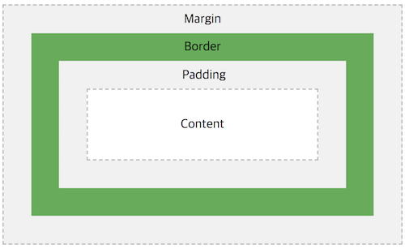

Box model

- Content 영역
요소의 실제 내용을 포함하는 영역입니다. 따라서 크기는 내용의 너비 및 높이를 나타냅니다.
- Border 영역
content 영역을 감싸는 테두리 선을 border라고 합니다.
- Padding 영역
content 영역을 감싸는 테두리 선을 border라고 합니다.
content 영역이 배경, 색, 또는 이미지가 있을 때 패딩 영역까지 영향을 미칩니다.
이에 따라 padding을 content의 연장으로 볼 수 있습니다.
- Margin 영역
border 바깥쪽의 영역을 margin이라고 합니다.
border 영역을 다른 요소와 구별하기 위해 쓰이는 빈 영역입니다.
즉, 주변 요소와의 여백(간격)을 margin을 이용해 지정할 수 있습니다.